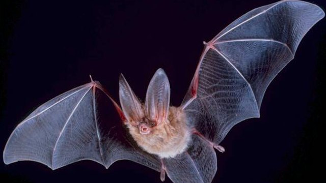

物理5–11 岁约 10 分钟
点击够才找得到路，不响就撞墙？
同一只纸油鸱。点击够响，回声弹回来，才找得到墙；不响，身子撞上去。差在响不响、弹不弹，不在超声高不高，也不在眼睛大不大。本页不进真洞追鸟，观察后洗手。
同一只纸油鸱，点击一回，不响一回

点击够才找得到路。不响就撞墙。先点「点击」，再点「试一试」。
先猜一猜，再试
第 1 题：点击 80，咔够响，找得到墙吗？
押一个。把点击调到 80，再点试一试。
第 2 题：点击 10，不响，还找得到吗？
押好后点击 10，再试一试。
第 3 题：点击 50，刚好一半，算找到墙吗？
押好后点击 50，再试一试。
同一只纸油鸱：点击够才找得到墙；不响就撞墙
先点「点击」再点「试一试」，看一圈圈回声弹到石墙。再点「不响」试一次，看是不是身子撞上墙、回声没有了。
纸油鸱始终是同一只。差在响不响、弹不弹，不在超声高不高——那是蝙蝠自己的账。也不在眼睛大不大——那是猫头鹰的账。咔够才把路送到耳朵里，不响就把墙漏掉。
舞台上的「找得到」是本页比较尺子：点击 ≥ 80 才算找到墙。刚好 50 还不够，会停在半中间。不进真洞追鸟，不伸手捞，观察后洗手。本页用纸板。
洞穴点击图鉴
点一张，对照舞台：谁让点击够才找得到路，谁让不响就撞墙。
点一张图鉴，对照为什么点击够才找得到路。
猜一猜
同一只纸油鸱要找得到墙，靠的是点击够响，还是不响？
先押一个，再点「看答案」。
任务：点击和不响都试
先把点击调到 80 或更高试一次，再调到 20 或更低试一次。两头都点过「试一试」即可完成。
开放式提示不会代替上面的正式任务。
尚未完成：先点击试一次，或不响试一次。
同一只纸油鸱，先点击试一次，再不响试一次
舞台上只改一件事：点击有多响。同一只纸油鸱、同一座洞，先点击试一次，看回声弹不弹得到石墙；再不响试一次，看是不是身子撞上墙、回声没有了。这样比，才知道找路靠的是点击回声，不是「它是蝙蝠那种超声」，也不是「它只靠眼睛看」。
回家只带两句：「点击够才找得到路」；「不响就撞墙」。不要写成「越静越好走」。
咔够，台上回声才弹到墙，不是谁超声更高。
不响以后台上身子撞上墙，回声没有了。
蝙蝠常用超声；本页比能听见的咔，两句不要并成一句。
不进真洞、不追活鸟，本页用纸板对照。
这在教什么：孩子要能对点击和不响各报弹回或撞墙，并否定「它是蝙蝠那种超声」和「它只靠眼睛看」。
- 点击那一次，回声弹到墙了吗？
- 不响，台上还找得到吗？
- 本页要比蝙蝠那种超声吗？
- 能进真洞追鸟吗？
找路靠点击回声，不是超声，更不要进真洞追鸟
咔够响，回声才送到石墙上。这一找只在够响时才成立。不响，眼前就剩墙。
不要把它讲成「越静越好走」或「发出蝙蝠那种超声就行」。蝙蝠自己常用超声，零件不一样。猫头鹰夜眼比的是谁在夜里看得清，也不是这一页。
不进真洞，不追活鸟。看完按二十秒洗手。本页用纸板。
给家长的问题
- 点击那一次，孩子指的是嘴和石墙，还是在说「它比较吵」？让他再指一次咔和回声。
- 不响，为什么会撞墙？哪一句四岁听得懂？
- 如果他说「它是蝙蝠那种超声」——超声是哪一笔账？本页少的是能听见的咔还是更高的叫？
- 猫头鹰夜眼和油鸱点击，差在「只靠眼睛」还是「听回声」？
- 不进真洞、不追活鸟、看完洗手：红线怎么说？本页能当探洞课吗？
背后的原理
舞台上不写这些词，留给孩子用眼睛看。油鸱用舌头发出人耳听得见的短咔，听回声才在洞里飞。本页用点击 ≥ 80 当门槛，50 还不够，会停在半中间。
这不是蝙蝠超声说明书，也不是猫头鹰的静翼夜眼。超声另开一笔，夜眼另开一页，都不要并进本页第一完成句。
人去进真洞追鸟有迷路和应激风险。观察后洗手。舞台用纸板。
接下来可以去
带走句：点击够才找得到路；不响就撞墙。油鸱观察站看真点击；回声工坊看墙有多远，猫头鹰页看静飞夜眼。